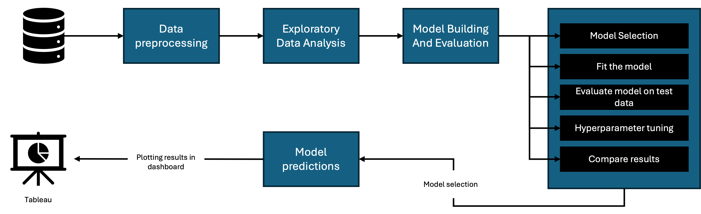
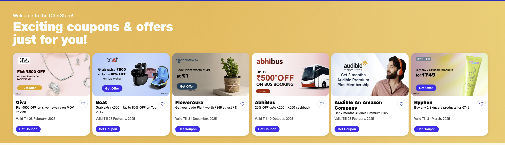

Professional Experience
Explore my work experience in data science, analytics, and system architecture roles.

Philadelphia Gas Works
Statistics and Economics Intern | May 2024 - Dec 2024
As the sole Data Science intern of the customer programs department, my roles primarily involved developing predictive models and conducting statistical analyses on PGW’s customer data. My responsibilities spanned forecasting energy burdens, monthly customer counts, evaluating the impact of campaigns and informing data-driven communication strategies. I delivered numerous projects, each involving collaboration with cross-functional teams, understanding their requirements, gathering useful data and providing actionable insights and recommendations to stakeholders. Some of my highest-impact projects completed at PGW are elaborated below.
Monthly Customer Enrollment Forecasting Using Time-Series Analysis
Objective: To develop a model to help with budgeting and resource allocation by forecasting the monthly number of customers enrolling in specific programs.
Business Impact: The model provided a reliable way to predict monthly enrollments, enabling the organization to plan budgets, allocate resources more effectively, and optimize programs. By accounting for seasonality and external factors, it significantly improved the accuracy of quarterly forecasts and supported smarter decision-making.
Methodology: I started with exploratory data analysis (EDA) in Python to identify trends, seasonal patterns, and external factors influencing enrollments. After cleaning and preprocessing the data, I used the Prophet time series model to capture seasonality, achieving a mean absolute percentage error (MAPE) of less than 10%. I fine-tuned the model iteratively by adjusting hyperparameters and incorporating external regressors for improved accuracy.
Tools: I cleaned and preprocessed the data using Python and SQL, then developed the model in Python. The final results were delivered through an interactive Excel dashboard, providing easy access and usability.
Challenges: The most challenging aspect of the project was building the model. I addressed this by conducting extensive research, experimenting with various models, and fine-tuning them iteratively to optimize performance and ensure the best results.
Results: The model was well-received by the team for its accuracy, accessibility, and ability to incorporate external factors into projections. These projections were reviewed during monthly meetings to evaluate customer growth and optimize budget allocation for discount programs.
Analysis of Low-Income Customer Behavior
Objective: The company wanted to analyze the effectiveness and participation rates of various financial assistance programs and identify the major factors affecting these participation rates.
Business Impact: The analysis helped the organization gain a deeper understanding of its low-income customer base and address critical business questions, such as identifying factors affecting participation rates, evaluating the effectiveness of existing communication strategies, uncovering barriers to program engagement, and determining correlations between demographic or behavioral patterns and program participation.

Methodology: I conducted exploratory data analysis (EDA) on a dataset of over 50,000 customers, utilizing pivot tables, scatter plots, histograms, and data grouping to uncover patterns and trends. Correlation analysis was performed to identify key relationships between demographic factors and program participation rates. The data was cleaned and preprocessed in Python, with insights visualized in Tableau.
Tools: I utilized Python and SQL for data cleaning and preprocessing, with analysis and visualizations created in Tableau.
Challenges: Cleaning and merging data from multiple sources was a key challenge, which I effectively addressed using Python's pandas library.
Results: The analysis revealed various factors, such as age and assistance type, that affected participation rates. It also raised new questions about whether current outreach methods were effective, forming the basis for a survey conducted among customers to explore similar questions.
Integrating City Government Datasets to Identify Potential Candidates for Financial Assistance Programs
Objective: As an intern, one of my tasks was to research publicly available datasets that could help identify potential customers for financial assistance programs.
Business Impact: This initiative ensured early recognition of low-income customers, enabling better financial aid distribution, reducing payment delinquencies, and optimizing the utilization of government-supported program budgets.

Methodology: I researched publicly available datasets from sources like the Census and OpenDataPhilly. Using these sources, Performed EDA on these sources to locate low-income housing locations and identify potential customers for targeted outreach.
Tools: I preprocessed the data using Python to standardize and align it with the company’s formatting before merging it with our customer data.
Challenges: The main challenge was identifying publicly available datasets that addressed key organizational issues while ensuring data quality. I tackled this by prioritizing the organization's challenges, researching datasets relevant to the top problems, and focusing on government-provided or well-documented data to maintain quality standards.
Results: I delivered a list of potential leads for low-income programs, enabling the team to execute targeted outreach campaigns and inform customers about financial assistance programs they might qualify for.
Energy Burden Forecasting and Analysis
Objective: The purpose of this project was to identify disparities in energy usage and energy burden between customer programs, forecast future burdens, and provide actionable insights through a user-friendly dashboard.
Business Impact: This tool provided a deeper understanding of customer energy usage, helping the organization reduce operational inefficiencies, enhance program performance, and better support customers with high energy burdens.

Methodology: I integrated city-provided property assessment data with customer energy usage records using SQL, enabling an analysis of energy consumption alongside housing attributes such as construction year, living area, and building conditions.
Tools: I developed an interactive Tableau dashboard to visualize energy usage trends across customer programs. The dashboard provided detailed comparisons based on housing attributes like construction year and living area. Additionally, I incorporated a feature to estimate energy burden using historical averages, total customer counts, and customizable group definitions for tailored analysis.
Challenges: The biggest challenge was creating an interactive Tableau dashboard that directly addressed business needs while allowing users the flexibility to explore the data further. I overcame this by studying effective dashboard designs, collaborating closely with senior team members to understand stakeholder priorities, and organizing the dashboard into clear, functional sections. Using SQL and Tableau, I incorporated essential features and ensured the tool was intuitive and impactful.
Results: I created a comprehensive Tableau dashboard that offered insights into energy usage patterns, facilitated comparisons between customer programs, and provided forecasting capabilities for energy burden, significantly improving program analysis and decision-making.
Survey to Explore Financial Assistance Barriers
Objective: Previous analysis revealed age as a key factor affecting participation rates in financial assistance programs. To further explore this and address broader questions surrounding low participation rates, I conducted a survey to assess program awareness, effectiveness, and the impact of various factors on engagement.
Business Impact: The survey provided critical insights into customer perceptions of financial assistance programs, the effectiveness of existing outreach campaigns, and areas for improvement. By addressing key business questions, it enabled the organization to refine awareness efforts, enhance program engagement, and optimize communication strategies to better meet customer needs.
Methodology: I spearheaded the survey with the help of Bellomy Research among 900 customers. The survey posed questions related to program awareness, preferred communication methods, customer satisfaction, and other relevant topics.
Tools: I merged the survey responses with customer data using Excel and derived analytical insights using Tableau and Python.
Challenges: Formatting the survey responses for analysis was a significant hurdle, particularly because much of the data was free text. I addressed this by using Excel and Python to preprocess and organize the responses into a structured format, ensuring they were ready for analysis.
Results: The analysis identified ineffective communication channels and highlighted preferred outreach methods for different customer groups. These findings enabled the organization to refine awareness campaigns, introduce new outreach strategies, and improve overall program engagement and reach.
Analysing the effectiveness of our recertification strategy
Objective: The objective of this project was to analyze the annual recertification process required for customers to remain enrolled in low-income programs, identify stages with the highest drop-off rates, assess its effectiveness, and provide insights to help the organization strategize and forecast future customer retention.
Business Impact: The analysis provided a deeper understanding of the recertification process, helping the organization reduce customer attrition, improve the efficiency of their programs, and better anticipate recertification volumes to allocate resources effectively.
Methodology: Data preprocessing was done using SQL and data visualization was done using Tableau. Developed a dashboard to track customer retention through each stage, identify drop-off points, and visualize future recertifications.
Tools: I merged the survey responses with customer data using Excel and derived analytical insights using Tableau and Python.
Challenges: The biggest challenge was visualizing the recertification process, as its 45-day timeline varied for each customer, making it difficult to showcase monthly drop-offs. Unclean data further complicated the task. I addressed this by performing data aggregation and grouping customers by their stage and remaining days in the process, enabling clear and interpretable visualizations that highlighted monthly drop-offs effectively.
Results: The dashboard helped in identifying stages that faced the most drop-off thus improving the overall process, it also provided details about upcoming recertifications helping the organization in better planning

Reliance Jio Infocomm LTD
Solutions Architect | Nov 2020 - Jul 2023
I was part of the Design and Architecture team at the company, where I played a pivotal role in developing system designs and architectures based on business requirements. Some of the systems I designed include an online SIM ordering and delivery system, an improved JioPhone sales system, the integration of new telecom regions into the existing architecture, and more. I also oversaw the delivery of these designs, which involved regular meetings with various development teams and resolving any issues that arose until deployment in production. In addition to system design, I developed Python tools for the team to streamline various tasks and reduce issue analysis time. Further details on the systems and tools I designed are provided below.
On-Demand SIM Activation and Doorstep Delivery System
Objective: The company wanted a system that would allow users to order an activated SIM card directly from the company website or mobile app and have it delivered to their doorstep.
Business Impact: This system aimed to increase the reach of our products and make it easier for customers to place orders. As no similar system was available in the market at the time, it gave our product a competitive advantage.

Methodology: Researched competitor solutions to identify shortcomings and customer-preferred workflows, guiding improvements in system design. Collaborated with development teams to assess available APIs and system integrations. After extensive brainstorming, designed a secure, end-to-end system that adhered to data privacy and security guidelines. Integrated advanced computer vision models for fraud prevention using face detection. Presented the system architecture to over 500 stakeholders and actively oversaw development and deployment, providing continuous support to resolve issues and ensure a smooth rollout.
Tools: I used SOAP UI and Postman to test APIs across existing systems, ensuring functionality and reliability. SQL was utilized to query databases and validate data flow, ensuring consistency and accuracy. For issue tracking and management, I leveraged Azure DevOps, streamlining debugging and collaboration across teams.
Challenges: One of the main challenges was the scale of the project and the number of stakeholders involved. Designing a solution that met everyone’s requirements was difficult. We addressed this by holding regular meetings with different teams to provide constant updates on the system and gather feedback. Additionally, we ensured that every stakeholder understood the priority and importance of various requirements, facilitating a smooth design and development cycle.
Results: The system was deployed in record time, ahead of any other telecom provider, making our company the first to offer such a service at the time. Check it out for yourself: Click here
Central Coupon Management System
Objective: The organization ran multiple campaigns to onboard customers with various coupons and discount vouchers but lacked a central system to manage them, making it difficult to access historical data or use existing APIs.
Business Impact: A centralized system would standardize campaign management, reducing complexity and ensuring consistency across all campaigns. It would also simplify coupon generation, management, and validation for on-field employees for all campaigns
Methodology: I conducted a technical analysis of historical campaigns to identify commonalities in API structures, coupon generation mechanisms, and data handling. Leveraging existing APIs, I designed a scalable system that could manage past campaigns while seamlessly integrating new ones. Using SOAP UI and Postman, I tested and optimized API workflows to ensure smooth data exchange. SQL was employed for data validation, ensuring accuracy in coupon tracking and campaign records. The system was built with modularity in mind, enabling flexibility for future campaign integrations while maintaining consistency and security in coupon management.
Tools: I used Soap and Postman to test and design APIs. SQL was used to do data validation and testing.
Challenges: The biggest challenge was analyzing historical campaigns and consolidating diverse coupon generation systems into a unified framework. Each campaign had its own technical flow, APIs, and validation mechanisms, requiring extensive research to identify commonalities and standardize processes. Additionally, collaborating with multiple teams—including marketing, campaign management, and development—was complex, as each had different requirements and priorities. Balancing these inputs while ensuring system compatibility and scalability required careful negotiation, iterative refinement, and rigorous API testing. By thoroughly reviewing documentation, consulting senior members, and systematically testing integrations, I was able to develop a cohesive solution that met all business and technical needs.
Results: The result of this project was the successful development of a centralized campaign management system that streamlined coupon generation, validation, and tracking across all customer acquisition campaigns. The system standardized workflows, reducing operational complexity and ensuring seamless integration with existing APIs. It enabled marketing and on-field teams to efficiently manage and retrieve historical campaign data, improving decision-making and reducing redundancy in new campaigns. The system became a foundational tool for future campaigns, significantly improving efficiency and scalability in promotional efforts.
Python Programs for Operational Efficiency
Objective: I identified several areas within the company that could be improved through Python automation, such as reducing penalties from faulty invoices and addressing data extraction issues while fixing bugs. I developed Python-based tools to streamline these processes and effectively resolve these challenges.
Business Impact: The Python-based programs significantly enhanced efficiency by automating data extraction from invoices and PDFs, reducing manual effort and analysis time. The software also identified defective invoices, minimizing penalties from external audits and improving compliance.

Methodology: The approach focused on identifying repetitive tasks that consumed significant time for the team and determining whether a software solution could perform them more efficiently. After developing the tools, I presented them to the team, provided thorough documentation on their usage, and included guidelines for future modifications.
Tools: The tools were developed in Python, with Azure DevOps used for version control. Since the primary focus was working with PDF - extracting data and storing it in a structured format, libraries such as OpenCV, tabula-py, and PyMuPDF were utilized.
Results: The program detected 90% of defective bills, significantly reducing penalty costs for the company. It also enabled efficient extraction of text and image data from invoice PDFs, cutting analysis time for the testing team.
Youth Customer Onboarding and JioPhone Sales Integration
Objective: The organization wanted to improve the accessibility of our services and our products like JioPhone by introducing them to younger demographics. The current system didn’t have proper checks in place to cater to such needs.
Business Impact: Since JioPhone was a product that was extensively used in rural areas, such a system would increase the reach of an already popular product.

Methodology: I integrated the existing system with image recognition technology using Hyperverge to authenticate younger customers through valid identity documents. Additionally, I maintained and updated the JioPhone sales system to ensure it remained aligned with our other workflows.
Tools: I primarily used Visio and UML to visualize the system architecture and data flow. For data validation and testing, I utilized SQL, Postman, and SOAP.
Challenges: Understanding the JioPhone system was challenging due to its complexity and age. To overcome this, I thoroughly reviewed the available documentation, sought guidance from senior team members, and conducted extensive testing of the system and its API calls. This hands-on approach helped me gain a comprehensive understanding of the system's logic and functionality.
Results: The system and the product are still an integral part of the company’s revenue and are crucial, especially among aged and rural customers. Check it out here: JioPhone.